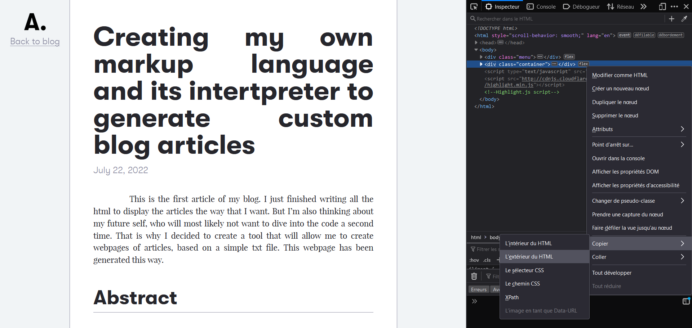

Creating my own markup language and its intertpreter to generate custom blog articles.
July 22, 2022
This is the first article of my blog. I just finished writing all the html to display the articles the way that I want. But I’m also thinking about my future self, who will most likely not want to dive into the code a second time. That is why I decided to create a tool that will allow me to create webpages of articles, based on a simple txt file. This webpage has been generated this way.
Abstract
The goal here is to allow anyone to create an html template once, and use it again for different contents (here, to write articles). To do this, I will start by defining a very simple custom markup language, then write code to convert it into a webpage.
The task will be divided into 3 parts: first, writing an article in a txt file, then converting it into a json array using Python, and finally turning that array into the final html page using JavaScript. Indeed, JavaScript can read json files with ease (after all, JSON stands for JavaScript Object Notation).
The 3 steps of the process
First step: The markup language
Presentation
To create this language, I took inspiration from existing tools, mostly HTML and LaTeX. It is design to be simple to use, and has only few options, as all the visual elements like fonts, colours, or text alignment are handled by CSS later. The goal here is to be able to master it in a minute and start writing without worrying about the quality of the final result.
Structure and tags used
The file starts with the title of the article, followed by the date. Then a series of tags can be used to organise the article. The most important ones are the #title and #subtitle tags. Writing #image adds an image from a custom source and its description. Writing text without a tag will simply display it as a paragraph.
Comments can be added by beginning the line with //. These will not be saved anywhere other than in the txt file.
Finally, the file must end with an #end tag. And there we have it!
Example
This is my article title
July 22, 2022
#title This a title
#subtitle This is a subtitle
Some content. Same paragraph content.
Other paragraph content.
#image path/to/image.png Here I describe the image I just added.
// A comment that will not figure in the json file and the html page
#end
Second step: Converting to JSON
Presentation
Now that the article has been written in a txt file, I will use a Python script to convert it to a JSON array. It will save the content written as well as its ‘class’ (title, subtitle, image, or text). The script will read the file line by line and add an element in the array and figure out the class according to the tag in the beginning.
Code overview
The logic of the code is very simple. Here is how it works:
Read the article title and date
While the current line is not '#end'
Read the current line
Add an element in the JSON array based on its content
Skip to the next nonempty line
The first function that we need will allow us to ignore the empty lines, by skipping to the next nonempty one (comments are considered empty lines).
def next_nonempty_line(lines, current_line_number):
"""
list lines : the list of lines of the article
int current_line_number : the current line number (starting from 0)
"""
current_line_number += 1
while current_line_number < len(lines) and ( lines[current_line_number] == '\n' or lines[current_line_number].startswith('//') ):
current_line_number += 1
return current_line_number
Then, for each line that we find, we can create a dictionary corresponding to the content that we read. Luckily Python makes this very easy with the startswith() attribute. Here is an example with a #title line:
if article_lines[current_line_number].startswith('#title '): # if the current line is a title
dict = { 'class' : 'title',
'content' : article_lines[current_line_number][7:-1]}
The #image tag is a bit trickier to deal with since it can be followed (or not) by two arguments. Here is how it is handled:
def extractImageInfos(line):
i = line.find(' ') # find the first space, where the source begins
j = line.find(' ', i+1) # find the second space, where the description begins
if j != -1: # if there is a text description
return { 'class' : 'image',
'source' : line[i+1:j],
'content' : line[j+1:-1]}
else: # if there is no text description, the content is empty
return { 'class' : 'image',
'source' : line[i+1:-1],
'content' : ''}
The final step is to write the array in a JSON file and save it. The program can be used by running the following command : py article_txt_to_json_converter.py <article_txt_file_name>.
The complete code can be found on my GitHub.
Third step: Converting to HTML
Presentation
Now that I can create a structured JSON file in seconds, I need to use it to generate an HTML webpage. I will naturally use JavaScript. The idea is to start with a nearly empty page and append <div> elements one after the other. The generated code can then be saved in a new file and used on the blog.
Importing the JSON file
When I tried to make my program import a JSON file and read it, I hit an unexpected wall. One could think that a localhosted HTML page will have access to local files, but the request is blocked. What happens is that local files are now considered as foreign files, since a security threat has been discovered. I finally found an answer that does the job perfectly:
function getJsonFile(){
var file_to_read = document.getElementById("jsonfileinput").files[0];
var fileread = new FileReader();
fileread.onload = function(e) {
var content = e.target.result;
var intern = JSON.parse(content); // parse json
const div_to_remove = document.getElementById("removeme"); // Removing the div that was used to import the json file
div_to_remove.remove();
document.title = intern[0].content; // Sets the title of the page to the title of the article
intern.forEach(dict => { // Loop through the json file
addElement(dict); // Display the content of the json file
});
};
fileread.readAsText(file_to_read);
}
Now we only need to define the function that will add a <div> in the HTML page. It is very straight forward and only changes its behaviour if an image is encountered.
function addElement(dict) {
var newDiv = document.createElement("div"); // Create a new div element
var newContent = document.createTextNode(dict.content); // Create a text node
if (dict.class == "image") {
var newImg = document.createElement("img"); // Create a new img element
newImg.src = dict.source; // Set the source of the image
newDiv.appendChild(newImg); // Append the image to the div
}
newDiv.appendChild(newContent); // Append the text to div
newDiv.classList.add(dict.class); // Add the class to the div
container.insertBefore(newDiv, footer); // Append div to the HTML document, in the container and before the footer
}
That’s it for the code! Once again all of it is available on my GitHub.
Demonstration & Improvements
Demonstration
Let’s look at how to use this tool. First write your article and convert it to JSON by executing the following command in a terminal: py article_txt_to_json_converter.py <article_txt_file_name>.
Executing the command in a terminal.
Then open article_json_to_html_converter.html with your browser and select the newly generated JSON file. The page updates and displays the article!
The converter page and the result.
To save it, open the inspector with F12, copy the 'container' div, and paste it in the empty_article.html (line 40). Don't forget to change the title of the page (line 8). Then save it as new file.
Copying the code : Inspector, Right click on <div class="container"> > Copy > Exterior of HTML.
And voilà! This file can be used for the blog. Nevertheless, make sure that the related CSS files are accessible.
To further modify it, you can use an online HTML formatter (like
this one) and add new elements.
Possible improvements
I am generally satisfied of this tool and believe that it will save me a lot of time. However, it can only create about 90% of an article. You may have noticed that this article contains code snippets, and that the markup language does not handle them. I tried to implement it but couldn’t finish it, mainly because of the way that Python handles backslashes. Same thing for math formulas (that are not present here, but I plan to include some in the next articles).
As a result, I have to manually add these in the final html file, which is not difficult nor time consuming, but I would still like my language to handle them.
For the third time, all of this project is available on my GitHub. I hope you liked it. Feel free to use and modify it.